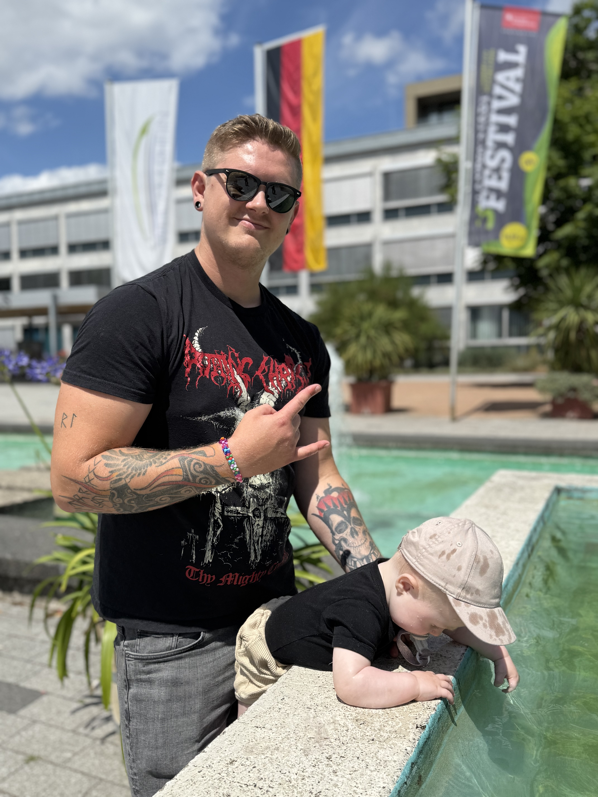

01
Feed
Follow friends and other concertgoers. See the shows, ratings and moments they share.
The concert tracker made for live music people
Discover concerts, log the shows you have seen, rate your experiences and build your own live music history.
See how it works ↓Built by a concert fan, for concert fans.
 YOUR SHOWS · YOUR STORY · ADMIT ONE
YOUR SHOWS · YOUR STORY · ADMIT ONEWhy Headlinr exists
Which were best? Who were you there with? For most of us, those memories are scattered across a camera roll, old ticket apps, spreadsheets, social media and whatever we can still remember.
How it works
Search existing events, or freely choose any artist, date and venue.
Add a show even if it never appeared in the database.
Save your rating and the details that made the night yours.
Create a searchable timeline, including concerts from years ago.
Inside the app
Follow friends and other concertgoers. See the shows, ratings and moments they share.

Explore concerts, festivals, artists, music news and other live music people.

Your concert archive: search artists, sort by date or venue, see saved events and revisit your history.
Artist pages
Search an artist, read their story and continue to Spotify or YouTube. Find upcoming concerts, ratings, activity and other people who have experienced the artist live.

Trusted music news
Headlinr gathers headlines from established music publications. You see the headline, image and publisher, then continue to the original source for the full article.
Headlinr never republishes full articles. Sources can change and expand over time.
“A setlist tells you what was played. Headlinr helps you remember the whole experience.”Your concert log, ratings, friends, events, artist pages and music news — brought together around the live moments that matter to you.
Growing with the community
Headlinr is under active development and shaped with the people who use it. We listen, learn and improve the app one release at a time.
Live API statistics and approved community testimonials will be added when available — no invented numbers or reviews.
For the whole live scene
Approved access can let artists update images, information, genres and links; show Spotify, YouTube, Instagram and a website; see follower counts and build a verified presence.
Create a user, then go to Profile → Settings → Request Artist Profile.
Request artist accessManage event details, running times, ticket links and artists. Build an organizer profile and, when available, send relevant updates to people following or saving the event.
Multiple approved people can manage the same organizer.
Create a user, then go to Profile → Settings → Request Organizer Access.
Request organizer accessYour festival companion
Explore lineups and running times, save events and discover artists.
Track what is happening, log concerts and see event changes.
Look back, rate every experience and continue your history.
Made in Norway. Built for everywhere.
From small local venues to the world’s biggest festival stages, live music brings people together everywhere. Headlinr is made in Norway and built to help you discover, remember and share those experiences — wherever the music takes you.

Why I built Headlinr
I’m Simen Kallevig, a metalhead and active concertgoer from Karmøy, with Karmøygeddon practically in my backyard. After years of shows, I realised I had lost track of how many concerts I had attended — and some of the details that made them matter.
Headlinr began as a practical way to keep those memories together: something genuinely useful for audiences, artists and organizers.
— Simen, founder of HeadlinrFAQ
Yes. Headlinr is free to download and use.
Yes, in the App Store and Google Play.
No. Add it yourself with any artist, date and venue.
Yes. Rebuilding your history is a core part of Headlinr.
Yes. Follow other concertgoers and save upcoming events.
Selected established publications. Headlinr links to the original publisher for the full story.
No. It complements setlist services by focusing on your wider experience.
Use the relevant request inside Profile → Settings.
Yes, after each person has been approved.
No. Its roots are metal, but it is made for live music across genres.
It starts from Norway and is built for international use. Coverage keeps growing.
Visit Headlinr Support.
Your history starts with one show
Start building your live music history today.
Scan to download Headlinr